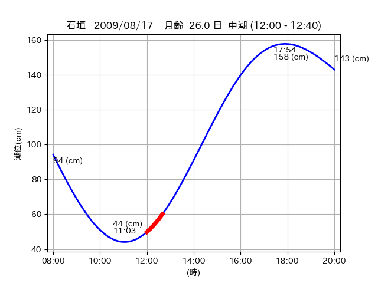

<!DOCTYPE html>
<html>
<head>
    
    <meta http-equiv="content-type" content="text/html; charset=UTF-8" />
    
        <script>
            L_NO_TOUCH = false;
            L_DISABLE_3D = false;
        </script>
    
    <style>html, body {width: 100%;height: 100%;margin: 0;padding: 0;}</style>
    <style>#map {position:absolute;top:0;bottom:0;right:0;left:0;}</style>
    <script src="https://cdn.jsdelivr.net/npm/leaflet@1.9.3/dist/leaflet.js"></script>
    <script src="https://code.jquery.com/jquery-3.7.1.min.js"></script>
    <script src="https://cdn.jsdelivr.net/npm/bootstrap@5.2.2/dist/js/bootstrap.bundle.min.js"></script>
    <script src="https://cdnjs.cloudflare.com/ajax/libs/Leaflet.awesome-markers/2.0.2/leaflet.awesome-markers.js"></script>
    <link rel="stylesheet" href="https://cdn.jsdelivr.net/npm/leaflet@1.9.3/dist/leaflet.css"/>
    <link rel="stylesheet" href="https://cdn.jsdelivr.net/npm/bootstrap@5.2.2/dist/css/bootstrap.min.css"/>
    <link rel="stylesheet" href="https://netdna.bootstrapcdn.com/bootstrap/3.0.0/css/bootstrap-glyphicons.css"/>
    <link rel="stylesheet" href="https://cdn.jsdelivr.net/npm/@fortawesome/fontawesome-free@6.2.0/css/all.min.css"/>
    <link rel="stylesheet" href="https://cdnjs.cloudflare.com/ajax/libs/Leaflet.awesome-markers/2.0.2/leaflet.awesome-markers.css"/>
    <link rel="stylesheet" href="https://cdn.jsdelivr.net/gh/python-visualization/folium/folium/templates/leaflet.awesome.rotate.min.css"/>
    
            <meta name="viewport" content="width=device-width,
                initial-scale=1.0, maximum-scale=1.0, user-scalable=no" />
            <style>
                #map_2ee83e19bf5b2c4dfd9f3c71ee0afa23 {
                    position: relative;
                    width: 2048.0px;
                    height: 1600.0px;
                    left: 0.0%;
                    top: 0.0%;
                }
                .leaflet-container { font-size: 1rem; }
            </style>
        
</head>
<body>
    
    
            <div class="folium-map" id="map_2ee83e19bf5b2c4dfd9f3c71ee0afa23" ></div>
        
</body>
<script>
    
    
            var map_2ee83e19bf5b2c4dfd9f3c71ee0afa23 = L.map(
                "map_2ee83e19bf5b2c4dfd9f3c71ee0afa23",
                {
                    center: [24.536, 124.316],
                    crs: L.CRS.EPSG3857,
                    ...{
  "zoom": 12,
  "zoomControl": true,
  "preferCanvas": false,
}

                }
            );

            

        
    
            var tile_layer_1d5f9e49f3a9568bec3cd0fb4812e074 = L.tileLayer(
                "https://cyberjapandata.gsi.go.jp/xyz/seamlessphoto/{z}/{x}/{y}.jpg",
                {
  "minZoom": 0,
  "maxZoom": 18,
  "maxNativeZoom": 18,
  "noWrap": false,
  "attribution": "\u5730\u7406\u9662\u5730\u56f3",
  "subdomains": "abc",
  "detectRetina": false,
  "tms": false,
  "opacity": 1,
}

            );
        
    
            tile_layer_1d5f9e49f3a9568bec3cd0fb4812e074.addTo(map_2ee83e19bf5b2c4dfd9f3c71ee0afa23);
        
    
            var marker_0546ba097bd912be56eefd4c2196681c = L.marker(
                [24.5571, 124.3355],
                {
}
            ).addTo(map_2ee83e19bf5b2c4dfd9f3c71ee0afa23);
        
    
            var icon_315b92ccbe262e9ad2f651b36dd7abb3 = L.AwesomeMarkers.icon(
                {
  "markerColor": "orange",
  "iconColor": "white",
  "icon": "info-sign",
  "prefix": "glyphicon",
  "extraClasses": "fa-rotate-0",
}
            );
        
    
        var popup_c2db8f4e463d77d114420b93d09f0324 = L.popup({
  "maxWidth": "100%",
});

        
            
                var html_3b2c27cd0da1362bf62801dc2f6daa71 = $(`<div id="html_3b2c27cd0da1362bf62801dc2f6daa71" style="width: 100.0%; height: 100.0%;"><table><tr><td></td></tr><tr><td><center>20090817 No.1 </center></table></td></tr></table</div>`)[0];
                popup_c2db8f4e463d77d114420b93d09f0324.setContent(html_3b2c27cd0da1362bf62801dc2f6daa71);
            
        

        marker_0546ba097bd912be56eefd4c2196681c.bindPopup(popup_c2db8f4e463d77d114420b93d09f0324)
        ;

        
    
    
                marker_0546ba097bd912be56eefd4c2196681c.setIcon(icon_315b92ccbe262e9ad2f651b36dd7abb3);
            
    
            var poly_line_a797b3bc4c780c005b7ff6721aaef5d0 = L.polyline(
                [[24.5571, 124.3355], [24.5586, 124.337]],
                {"bubblingMouseEvents": true, "color": "#FF00FF", "dashArray": null, "dashOffset": null, "fill": false, "fillColor": "#FF00FF", "fillOpacity": 0.2, "fillRule": "evenodd", "lineCap": "round", "lineJoin": "round", "noClip": false, "opacity": 1.0, "smoothFactor": 1.0, "stroke": true, "weight": 3}
            ).addTo(map_2ee83e19bf5b2c4dfd9f3c71ee0afa23);
        
    
            var marker_c41bf00efa9f05c55aef47ebd2d11df4 = L.marker(
                [24.5656, 124.3521],
                {
}
            ).addTo(map_2ee83e19bf5b2c4dfd9f3c71ee0afa23);
        
    
            var icon_47c1965d1c709067ace68e265e5a9311 = L.AwesomeMarkers.icon(
                {
  "markerColor": "blue",
  "iconColor": "white",
  "icon": "info-sign",
  "prefix": "glyphicon",
  "extraClasses": "fa-rotate-0",
}
            );
        
    
        var popup_0b4bae6df8eceb0f15ee00c62c0bcb38 = L.popup({
  "maxWidth": "100%",
});

        
            
                var html_cb7128fb0d12de8784ff1e252580644c = $(`<div id="html_cb7128fb0d12de8784ff1e252580644c" style="width: 100.0%; height: 100.0%;"><table><tr><td></td></tr><tr><td><center>20090817 No.2 </center></table></td></tr></table</div>`)[0];
                popup_0b4bae6df8eceb0f15ee00c62c0bcb38.setContent(html_cb7128fb0d12de8784ff1e252580644c);
            
        

        marker_c41bf00efa9f05c55aef47ebd2d11df4.bindPopup(popup_0b4bae6df8eceb0f15ee00c62c0bcb38)
        ;

        
    
    
                marker_c41bf00efa9f05c55aef47ebd2d11df4.setIcon(icon_47c1965d1c709067ace68e265e5a9311);
            
    
            var marker_63855de0e17067365ca3f68d4b2d6410 = L.marker(
                [24.5685, 124.3488],
                {
}
            ).addTo(map_2ee83e19bf5b2c4dfd9f3c71ee0afa23);
        
    
            var icon_934e64828ec6e1b00532856fbee414c3 = L.AwesomeMarkers.icon(
                {
  "markerColor": "orange",
  "iconColor": "white",
  "icon": "info-sign",
  "prefix": "glyphicon",
  "extraClasses": "fa-rotate-0",
}
            );
        
    
        var popup_dae782482f9e6a19c314c52bd4b60e80 = L.popup({
  "maxWidth": "100%",
});

        
            
                var html_3ea0111874f335d3a895d3426a9c6b3b = $(`<div id="html_3ea0111874f335d3a895d3426a9c6b3b" style="width: 100.0%; height: 100.0%;"><table><tr><td></td></tr><tr><td><center>20090817 No.3 </center></table></td></tr></table</div>`)[0];
                popup_dae782482f9e6a19c314c52bd4b60e80.setContent(html_3ea0111874f335d3a895d3426a9c6b3b);
            
        

        marker_63855de0e17067365ca3f68d4b2d6410.bindPopup(popup_dae782482f9e6a19c314c52bd4b60e80)
        ;

        
    
    
                marker_63855de0e17067365ca3f68d4b2d6410.setIcon(icon_934e64828ec6e1b00532856fbee414c3);
            
    
            var poly_line_fddd6d63e96a0664383d9ac60bda263d = L.polyline(
                [[24.5685, 124.3488], [24.566, 124.3472]],
                {"bubblingMouseEvents": true, "color": "#00FFFF", "dashArray": null, "dashOffset": null, "fill": false, "fillColor": "#00FFFF", "fillOpacity": 0.2, "fillRule": "evenodd", "lineCap": "round", "lineJoin": "round", "noClip": false, "opacity": 1.0, "smoothFactor": 1.0, "stroke": true, "weight": 3}
            ).addTo(map_2ee83e19bf5b2c4dfd9f3c71ee0afa23);
        
    
            var marker_8c88f05d0d50939e1e82d753eb8f2cd3 = L.marker(
                [24.5393, 124.3166],
                {
}
            ).addTo(map_2ee83e19bf5b2c4dfd9f3c71ee0afa23);
        
    
            var icon_b20a621b1e0dad07b6f23334b7b2f317 = L.AwesomeMarkers.icon(
                {
  "markerColor": "orange",
  "iconColor": "white",
  "icon": "info-sign",
  "prefix": "glyphicon",
  "extraClasses": "fa-rotate-0",
}
            );
        
    
        var popup_268169458bc7ea47e1379c3e6a4794d5 = L.popup({
  "maxWidth": "100%",
});

        
            
                var html_00097cd21658cdf06838e5d45cffc689 = $(`<div id="html_00097cd21658cdf06838e5d45cffc689" style="width: 100.0%; height: 100.0%;"><table><tr><td></td></tr><tr><td><center>20090817 No.4 </center></table></td></tr></table</div>`)[0];
                popup_268169458bc7ea47e1379c3e6a4794d5.setContent(html_00097cd21658cdf06838e5d45cffc689);
            
        

        marker_8c88f05d0d50939e1e82d753eb8f2cd3.bindPopup(popup_268169458bc7ea47e1379c3e6a4794d5)
        ;

        
    
    
                marker_8c88f05d0d50939e1e82d753eb8f2cd3.setIcon(icon_b20a621b1e0dad07b6f23334b7b2f317);
            
    
            var poly_line_7f000e5f9593eabadf642255d089ec18 = L.polyline(
                [[24.5393, 124.3166], [24.5321, 124.3145]],
                {"bubblingMouseEvents": true, "color": "#00FFFF", "dashArray": null, "dashOffset": null, "fill": false, "fillColor": "#00FFFF", "fillOpacity": 0.2, "fillRule": "evenodd", "lineCap": "round", "lineJoin": "round", "noClip": false, "opacity": 1.0, "smoothFactor": 1.0, "stroke": true, "weight": 3}
            ).addTo(map_2ee83e19bf5b2c4dfd9f3c71ee0afa23);
        
</script>
</html>